The claim that the world is "decarbonizing" usually rests on one number: the rising share of renewables in electricity. That number has risen every year this century, and on its own it is easy to read as progress. But electricity is only part of energy, and a larger renewable share says nothing about whether emissions are falling relative to output. The more interesting question is not are renewables growing but is growth in output finally breaking from growth in carbon. This is the decoupling question, and it is where policy either succeeds or quietly fails.
The literature has established that high-income countries can decouple, at least relatively, and that renewable electricity helps. What remains loose is three things. First, most country-level work is descriptive — it shows correlations without controlling for the fact that countries differ permanently in structure, climate, and industry mix. Second, it rarely asks whether the effect is uniform or concentrated in already-industrialized regions. Third, it seldom says where the current trajectory lands by 2030, the horizon most policy is actually written against. A first-difference estimator and a country-level event study around the year a country's renewable share first crosses 25% probe whether the link is causal or merely compositional.
This study addresses those gaps with a single transparent pipeline. I document the pace and geography of the transition, test whether countries are converging, classify each country with the Tapio decoupling index across multiple windows, and then estimate the renewable–emissions relationship with a two-way fixed-effects model that holds each country's unobserved structure constant and absorbs common global shocks through year fixed effects. A lagged specification checks that the result is not an artefact of simultaneous variation; a second outcome (grid carbon intensity) tests the displacement mechanism directly; and a constant-momentum projection closes with 2030.
The relationship between economic growth and environmental pressure has been framed since the 1990s by the Environmental Kuznets Curve (EKC) hypothesis and, more usefully for policy, by the concept of decoupling. The OECD (2002) defines decoupling as a decline in the ratio of environmental pressure to economic activity, distinguishing relative decoupling (the ratio falls while pressure still rises) from absolute decoupling (pressure falls outright). Tapio (2005) operationalized this for transport with an elasticity index that separates the two and has since been applied to energy–CO₂ systems.
Applied work has reached two broad conclusions. The first is that absolute decoupling of CO₂ from GDP is achievable but rare and geographically concentrated: Steinberger and Roberts (2010) and Jackson and Papathanasopoulou (2008) show it almost exclusively in mature, post-industrial economies, while much of the Global South remains coupled or expansively coupled. The second is that renewable electricity is the leading lever. Semieniuk et al. (2021) and the IPCC (2022) argue that low-carbon electricity deployment is the single largest contributor to modelled emission reductions, and the IEA (2023) attributes the majority of recent power-sector emission declines to renewables and nuclear.
Two gaps motivate this paper. First, the decoupling and renewable-deployment literatures are rarely joined in a single identification design that controls for permanent country differences. Pooled correlations can be driven by unobserved structural factors — climate, resource endowment, industrial base — that fixed effects absorb. Second, and more important, the literature tends to equate a rising renewable share with falling fossil generation. They are not the same. A renewable build that rides on top of a growing system can raise the share while fossil output keeps climbing — what I call the addition case, as opposed to genuine displacement. Hickel and Kallis (2020) and the broader green-growth debate stress exactly this point: without absolute reductions in fossil throughput, a higher clean share is a scoreboard, not a result. This paper measures both the decoupling link and the displacement mechanism, and shows they can point in different directions. This is not a fringe worry: the green-growth literature itself concludes that the fast, absolute decoupling the climate requires is not yet empirically observed (Parrique et al., 2019; Vadén et al., 2020). The contribution below is to measure displacement directly, with generation-level accounting, rather than infer it from a rising share.
Data come from Our World in Data's energy and CO₂ datasets (CC-BY), merged at the country-year level. I keep sovereign countries (OWID aggregates and "World" removed), years 2000–2022, and require non-missing renewable share, fossil share, low-carbon share, CO₂, GDP, population and electricity generation. This yields 163 countries and 3,749 country-year observations. Shares are generation-weighted at the global and regional level so that large producers count proportionally. Summary statistics appear in Table 1.
Five methods follow. Convergence. β-convergence regresses each country's annual log growth in renewable share on its initial log level; a negative slope means laggards grew faster. σ-convergence tracks the cross-country standard deviation of the share over time. Decoupling. The Tapio index divides the growth rate of CO₂ by the growth rate of GDP over a window; values below zero are absolute decoupling, 0–0.8 relative, 0.8–1.2 coupling, above 1.2 expansive coupling. The core estimate. A panel model of ln(CO₂ per capita) on renewable electricity share, log GDP per capita, country fixed effects and year fixed effects. Standard errors are reported two ways — heteroskedasticity-robust (HC1) and clustered by country — and an F-test confirms the country fixed effects are jointly significant (rejecting pooled OLS). A second outcome. Because CO₂ per capita mixes electricity with all other sectors, I also estimate ln(CO₂ intensity of electricity, gCO₂/kWh) on renewable share with the same fixed-effects structure; a fall in grid carbon intensity is the most direct evidence that renewables replace fossil plant. Identification deepening. A one-year lag of renewable share, a first-difference estimator, and a country-level event study around the 25% renewable threshold probe the direction and stability of the link.
| Variable | Mean | SD | Min | Max |
|---|---|---|---|---|
| Renewables share of electricity (%) | 34.51 | 33.45 | 0.00 | 100.00 |
| Fossil share of electricity (%) | 60.71 | 34.08 | 0.00 | 100.00 |
| Low-carbon share of electricity (%) | 39.29 | 34.08 | 0.00 | 100.00 |
| CO2 per capita (t) | 4.92 | 6.56 | 0.02 | 67.73 |
| GDP per capita (intl $) | 16,269.73 | 18,070.50 | 421.56 | 163,531.40 |
| Electricity demand per capita (kWh) | 3,861.74 | 5,594.26 | 8.89 | 56,048.73 |
| CO2 intensity of electricity (gCO2/kWh) | 447.49 | 253.92 | 0.00 | 1,306.72 |
By region (means):
| Variable | Africa | America | Asia | Europe | Oceania |
|---|---|---|---|---|---|
| Renewables share of electricity (%) | 41.29 | 44.19 | 22.99 | 32.17 | 43.97 |
| Fossil share of electricity (%) | 58.61 | 54.08 | 74.72 | 51.46 | 56.03 |
| Low-carbon share of electricity (%) | 41.39 | 45.92 | 25.28 | 48.54 | 43.97 |
| CO2 per capita (t) | 1.20 | 4.36 | 7.01 | 7.28 | 12.76 |
| GDP per capita (intl $) | 4,729.44 | 13,392.58 | 19,083.78 | 28,900.85 | 38,903.77 |
| Electricity demand per capita (kWh) | 692.80 | 3,037.76 | 4,291.97 | 7,755.86 | 10,325.57 |
| CO2 intensity of electricity (gCO2/kWh) | 417.43 | 382.56 | 570.05 | 384.18 | 459.65 |
Globally, renewables rose from 18.7% of generation in 2000 to 29.4% in 2022, a gain of 10.7 percentage points. The rate is not constant: the compound annual growth was 2.1% over the full period but 3.6% from 2015 onward, an acceleration that lines up with the post-Paris deployment push. Fossil fuels, by contrast, barely moved — from 64.6% to 61.4% (-3.2 points). The transition is adding clean generation faster than it is removing dirty generation, which is the essential tension of this century's energy story.
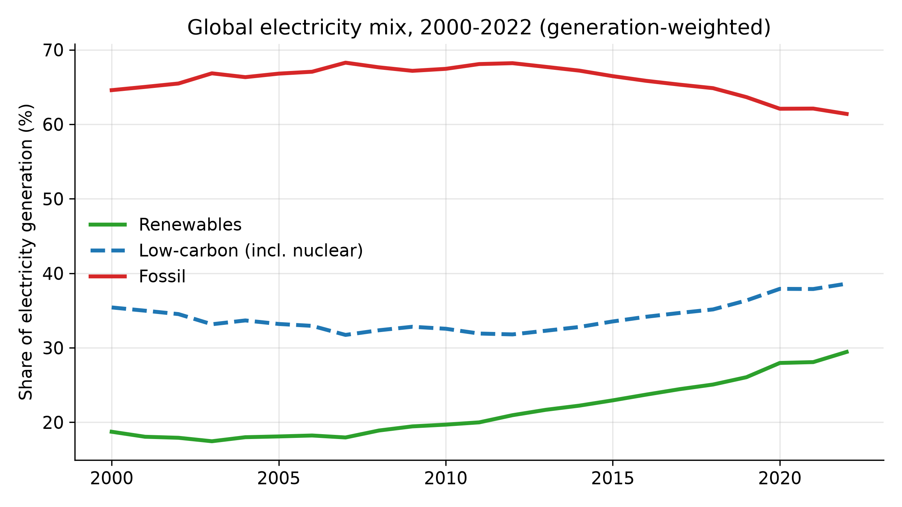
The geography is uneven (Figure 2). As of 2022, Oceania (59%), the Americas (50%) and Europe (44%) lead on renewable share, while Asia sits lowest at 28% despite being the world's manufacturing core. Africa (43%) is mid-pack — and as Section 4.5 shows, that matters, because high renewable share there has not yet translated into lower emissions.
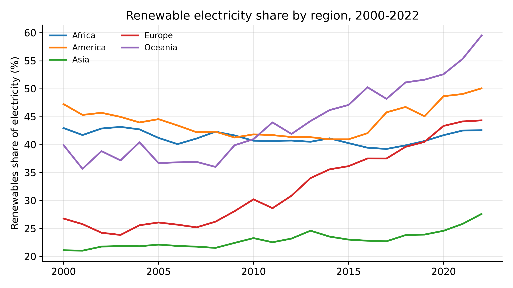
Renewable deployment is not a rich-country club. The β-convergence slope is −0.024 (SE 0.0019, p<0.001, R²=0.55), meaning countries with the lowest initial renewable share grew fastest. The cross-country dispersion also narrowed: the standard deviation of renewable share fell from 35.1 to 32.5 points (-7.6%). Both signs point the same way — the gap between leaders and followers is closing, not widening.
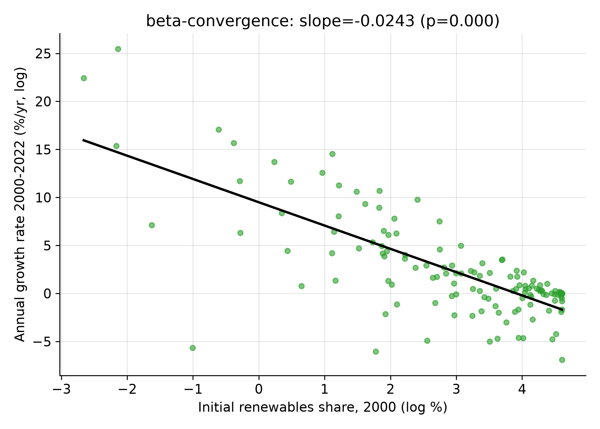
Across 163 countries over 2000–2022, 25.8% achieved absolute decoupling (CO₂ fell while GDP rose), 38.7% relative decoupling (CO₂ rose slower than GDP), and 31.9% stayed coupled or worse. The average decoupling index was 0.63 — emissions grew at about 63% of the rate of GDP. And the countries that raised their renewable share the most tended to decouple hardest: the correlation between renewable gain and the decoupling index is -0.22 (negative — more renewables, lower index).
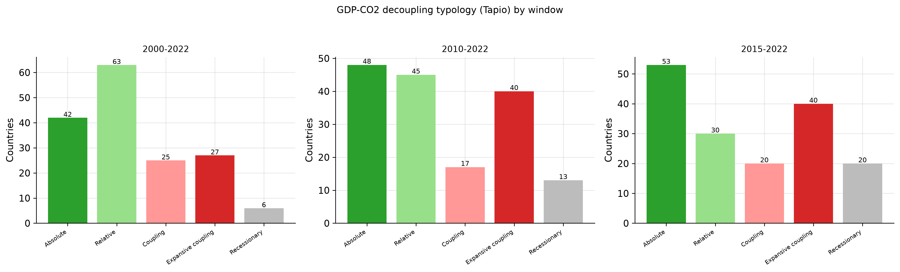
The more telling result is the trend. The share of countries in absolute decoupling rose from 11% in 2000-2005 to 34% in 2017-2022, while the relative-decoupling share fell as some countries moved through relative into absolute decoupling (Figure 6). Decoupling is not a static property of rich countries; it is spreading.
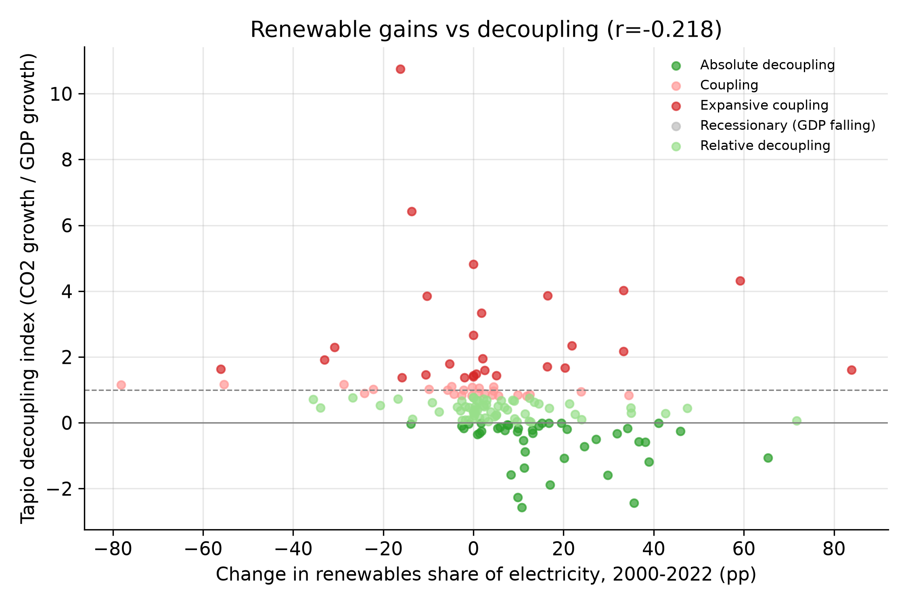
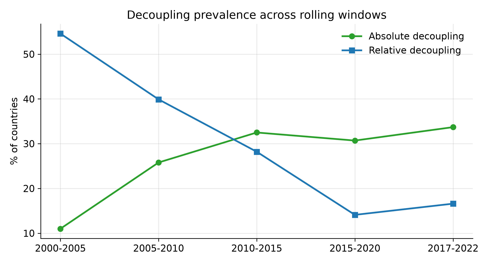
The descriptive patterns above could be confounded by country structure. The fixed-effects model controls for that. Table 2 reports a sequence of specifications. The baseline — country and year fixed effects — gives a coefficient of -0.0061 on renewable share (about 0.61% lower CO₂ per capita per +1 pp, p<0.001). The magnitude is stable as we add a demand control, lag the renewable variable, and move to a first-difference estimator. Country fixed effects are jointly highly significant (F=148, p<0.001), justifying the fixed-effects specification over pooled OLS. Standard errors are essentially unchanged when clustered by country (SE = 0.0020).
| Specification | Renewable coef | SE (HC1) | SE (cluster) | N |
|---|---|---|---|---|
| 1. Pooled OLS | -0.0077*** | 0.0003 | 0.0012 | 3,749 |
| 2. Country FE | -0.0060*** | 0.0006 | 0.0019 | 3,749 |
| 3. Country + Year FE (baseline) | -0.0061*** | 0.0006 | 0.0020 | 3,749 |
| 4. + Demand control | -0.0047*** | 0.0005 | 0.0015 | 3,749 |
| 5. Lagged renewable | -0.0051*** | 0.0006 | 0.0020 | 3,586 |
| 6. First-difference | -0.0065*** | 0.0015 | 0.0009 | 121 |
Baseline (Country + Year FE): coef = -0.0061, SE(HC1) = 0.0006, SE(cluster by country) = 0.0020, t = -10.6, p < 0.001, N = 3,749. Interpretation: ≈ 0.61% lower CO2 per capita per +1 pp renewable share. Significance: *** p<0.01, ** p<0.05, * p<0.1. Spec 6 is a first-difference model (dependent variable is the year-on-year change in ln CO₂ pc).
The link is not uniform across space (Figure 7). It is large and highly significant in Europe (−-0.53%/pp, p<0.001) and the Americas (−-0.76%/pp, p<0.001). In Asia the point estimate is negative but not significant at conventional levels (−-0.19%/pp, p=0.46), and in Africa it is small and only marginally significant (−-0.12%/pp, p=0.085). This is the regional mirror of the tercile result below: the clearest emissions dividend appears where renewable penetration is already substantial, and it is least certain in the still-expanding Asian and African systems — the very regions where Section 4.7 shows renewables being added on top of, rather than displacing, fossil generation.
| Region | % Δ CO₂/capita per +1pp | SE (%/pp) | p | N |
|---|---|---|---|---|
| Africa | -0.12%/pp | 0.07 | 0.085 | 1,150 |
| Asia | -0.19%/pp | 0.26 | 0.459 | 1,058 |
| Europe | -0.53%/pp | 0.07 | 0.000 | 874 |
| America | -0.76%/pp | 0.05 | 0.000 | 621 |
Country + year fixed effects. %/pp = coefficient × 100; negative means lower CO₂ per capita. Sorted by magnitude.
A further cut — by each country's 2000 renewable share, split into terciles — sharpens the mechanism. The emissions-reducing effect is strongest exactly where renewable penetration was already high: in the top tercile (2000 share > 48.8%) each +1 pp cuts CO₂/capita by about 0.66% (p<0.001), in the middle tercile 0.45%/pp (p<0.001), but in the bottom tercile (2000 share ≤ 6.5%) the coefficient is small and not significant (−0.23%/pp, p=0.15). Renewables deliver the clearest emissions dividend where the grid is already largely clean and marginal capacity displaces the remaining fossil; the dividend has not yet materialised in the still-expanding low-baseline systems. This is the regional story viewed through time rather than space.
| Tercile (2000 renewable share) | % Δ CO₂/capita per +1pp | SE | p | N |
|---|---|---|---|---|
| Low (2000 share ≤6.5%) | -0.23%/pp | 0.16 | 0.150 | 1,265 |
| Mid (6.5–48.8%) | -0.45%/pp | 0.08 | 0.000 | 1,242 |
| High (2000 share >48.8%) | -0.66%/pp | 0.08 | 0.000 | 1,242 |
Countries split into terciles by their 2000 renewable electricity share. Coefficient is the % change in CO₂/capita per +1 pp renewable share within each tercile (country + year fixed effects).
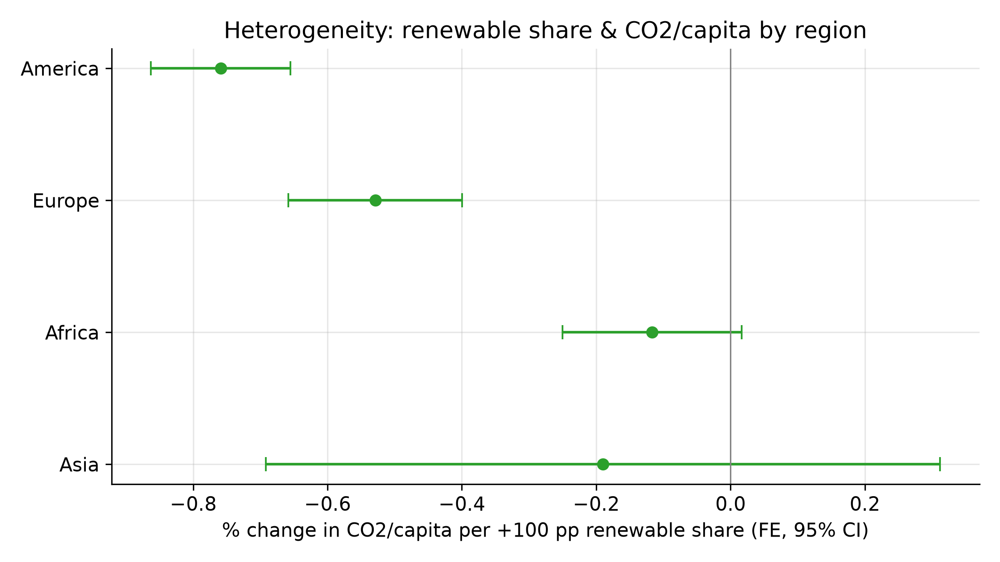
Interpretation. These are conditional associations from a fixed-effects design, not a randomized experiment. But the combination of country fixed effects, year fixed effects, lagged-renewable and first-difference robustness checks, and clustered standard errors is the standard applied-economics way to make a credible associational claim, and the coefficient is stable across all of them. The honest statement is: holding what is fixed about a country and what is common to a year constant, more renewable electricity goes with materially lower CO₂ per capita — except where the energy system is still expanding from a low base.
CO₂ per capita conflates power with every other emitting sector (transport, heat, industry). To test displacement more directly, I re-estimate the same fixed-effects model with the dependent variable as the CO₂ intensity of electricity (gCO₂/kWh) — essentially, how dirty is the average kilowatt-hour. Here the mechanism is unambiguous: if renewables replace fossil plant, grid carbon intensity must fall. It does. A one-percentage-point rise in renewable share is associated with 2.2% lower grid carbon intensity (coef -0.0222, SE 0.0008, clustered SE 0.0029, p<0.001, N=3,728, R²=0.97). The relationship is also visible descriptively: average grid intensity falls monotonically across deciles of renewable share (Figure 12). This confirms the decoupling link is not an artefact of GDP or population — it shows up in the physics of the grid itself.
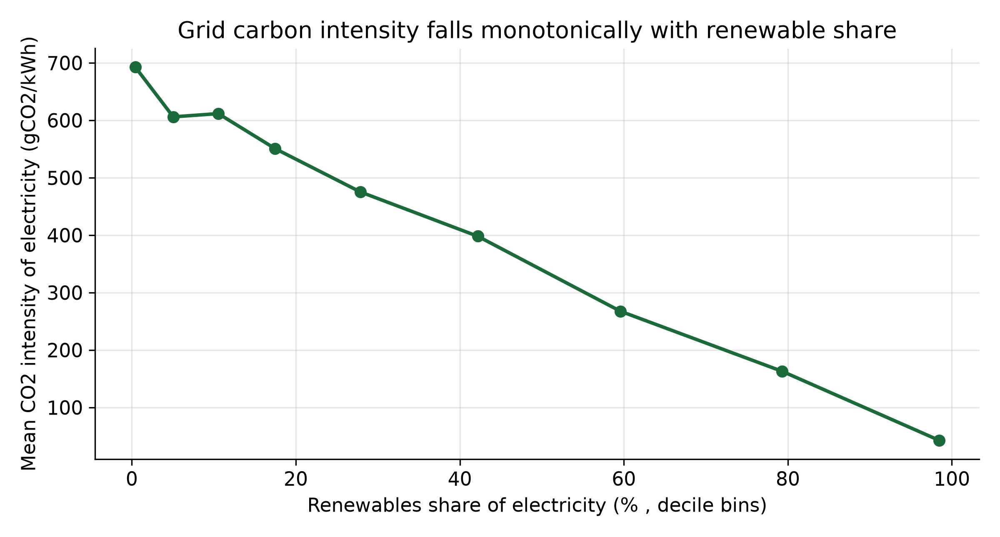
Two further designs push the link toward a causal reading. The first is a first-difference estimator: within each country, the year-on-year change in ln(CO₂ per capita) is regressed on the year-on-year change in renewable share (spec 6 of Table 2). Every factor fixed within a country drops out by construction. A one-point year-on-year rise in renewable share is associated with about 0.7% lower CO₂ per capita in the same step (coef -0.0065, SE 0.0015, t=-4.4, p<0.001). The sign and magnitude line up with the fixed-effects estimate.
The second is an event study. For each country, I mark the first year its renewable share crosses 25% as a "buildout event" and trace ln(CO₂ per capita) in the surrounding window, relative to the year just before the event, holding country and year fixed. Emissions were already drifting down before the event — by the time a country reached 25% renewables it had typically been decarbonizing for years. After the event the decline continues and, if anything, steepens: the post-event average deviation from the pre-event year is -11% (p=0.058). What the event study does not show is a sharp break at the threshold. That is a finding in itself: decarbonization in this sample is a momentum process, not a switch that flips when a country hits a round-number share.
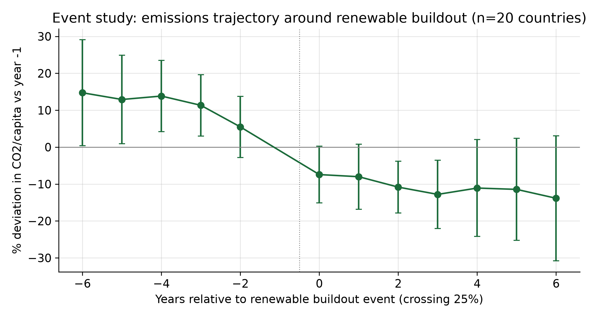
The fixed-effects and event-study results say renewables go with lower emissions per capita. They do not say renewables are replacing fossil. Those are different claims, and the difference is the whole story.
Look at absolute generation. Between 2000 and 2022 the world added 5,636 TWh of renewables — and 7,861 TWh of fossil generation (Figure 10). Fossil output grew by roughly 1.4 times as much as renewables in raw terawatt-hours. The displacement ratio — minus the change in fossil generation divided by the change in renewable generation — is -1.40. A positive number would mean fossil fell as renewables rose; it is negative, and sizeably so.
This is why the fossil share barely moved and why decoupling is only partial. Most renewable capacity has been built onto a system that was already growing, not onto one that was shrinking. The country view agrees: only 51 of 163 countries (31%) actually cut their fossil generation over the period, and the correlation between a country's renewable-share gain and its change in fossil generation is essentially zero (0.00). Gaining renewable share tells you almost nothing about whether a country burned less coal and gas in absolute terms.
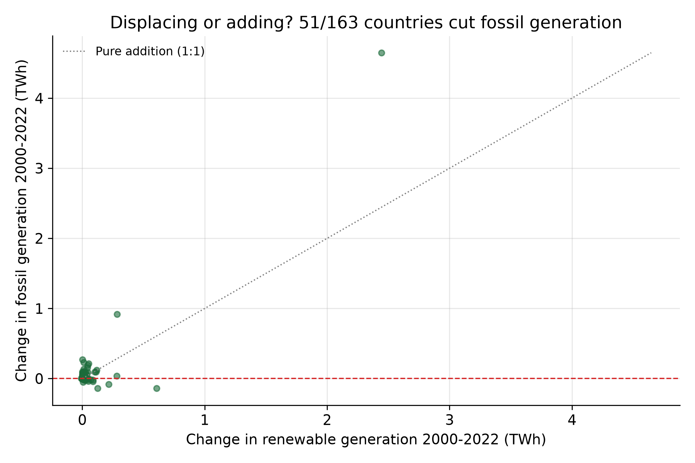
The regional decomposition makes the mechanism explicit (Figure 11). Europe is the only major region where renewables displaced fossil: its displacement ratio is positive (0.34) and 71% of European countries cut fossil generation. By contrast, Africa (-2.54, 16% displacing) and Asia (-2.29, 13% displacing) added fossil far faster than renewables. The renewable–emissions coefficient is therefore not a universal law; it is the statistical signature of regions that happened to retire carbon as they built clean.
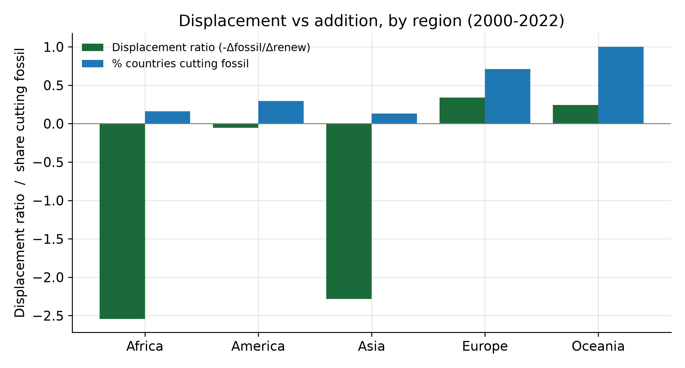
Extrapolating the last decade's momentum (0.87 points per year since 2013), the global renewable share reaches about 36% by 2030 (95% interval 35–37%). The slower full-period trend would give only 31%. Either way, renewables remain well short of fossil's ~61% share. The transition is winning ground; it has not yet won the war.
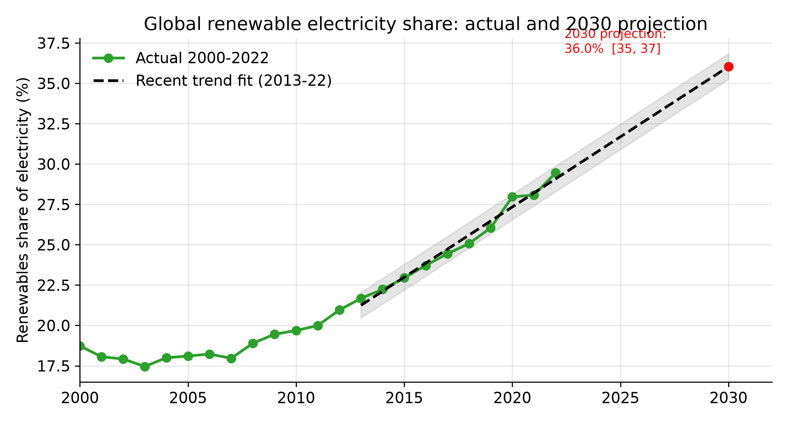
These six countries make the displacement-vs-addition distinction concrete (Figure 13). The clean-energy leaders — Germany, Denmark, the United Kingdom and the United States — cut fossil generation over 2000–2022 while raising their renewable share. The fast-growers — China and India — added enormous fossil generation even as their renewable share rose. The fixed-effects emissions dividend of Section 4.4 is therefore strongest where grids were already retiring carbon, which is exactly where it shows up as genuine displacement rather than an intensity-only effect.
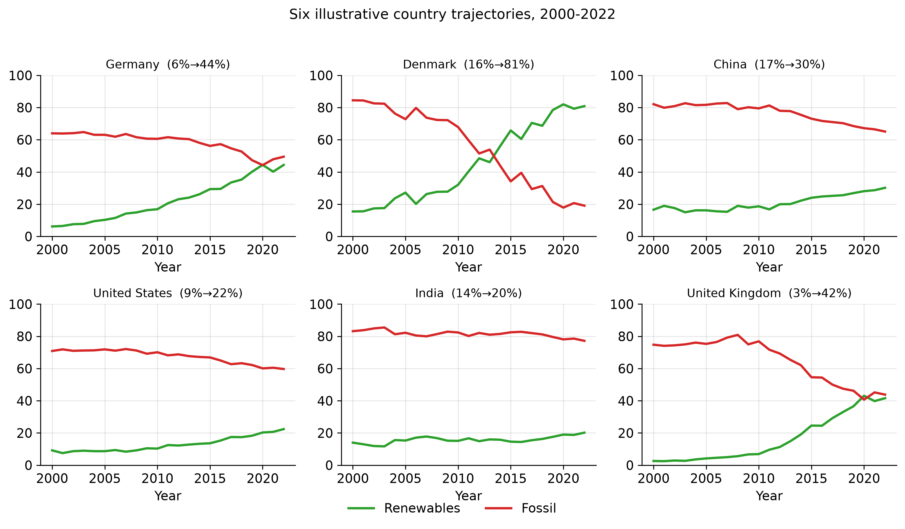
| Country | Renewable share | Δ fossil gen (TWh) | Δ CO₂/capita | Outcome |
|---|---|---|---|---|
| Germany | 6%→44% | -83 | -28% | Displaced fossil |
| Denmark | 16%→81% | -24 | -52% | Displaced fossil |
| China | 17%→30% | +4,647 | +186% | Added fossil |
| United States | 9%→22% | -140 | -31% | Displaced fossil |
| India | 14%→20% | +919 | +113% | Added fossil |
| United Kingdom | 3%→42% | -140 | -53% | Displaced fossil |
Renewable share start→end. Δ fossil generation is total fossil electricity added over the period; positive means fossil rose. Outcome = whether the country cut fossil generation (displaced) or not (added).
The renewable-share projection of Section 4.8 is only half the picture. Holding the 2013–2022 momentum of renewable share, low-carbon share and total electricity demand, fossil generation does not bend down — it keeps climbing. From 17,693 TWh in 2022 it reaches about 19,345 TWh by 2030, an added 1,652 TWh. The transition is adding clean power faster than it is retiring dirty power, which is precisely why absolute fossil output keeps rising even as the renewable share rises (Figure 14). This is the quantitative core of the paper's verdict: decoupling of intensity has not yet become displacement of generation.
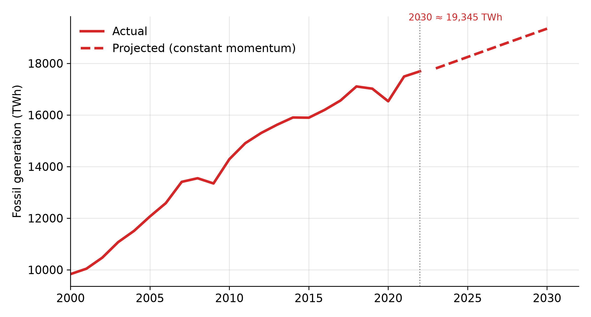
The forward projection of Section 4.10 is a floor, not a target. The more useful question runs the other way: given that electricity demand keeps growing, what would low-carbon deployment actually have to achieve? Holding 2022–2030 demand growth at its recent 2.48%/yr, total generation reaches about 35,060 TWh by 2030. To keep fossil generation no higher than today's 17,693 TWh, the low-carbon share would have to reach 49.5% — a gain of 10.9 points from 38.6%. Cutting fossil 10% requires 54.6%, and 30% requires 64.7%. Yet constant momentum only delivers about 44.5% low-carbon share by 2030 — roughly 5.0 points short of even holding fossil flat. The trajectory is not on course to stop fossil growth, let alone reverse it. Displacement has to be engineered, not assumed from the share.
The baseline result survives a battery of challenges (Table 3). Restricting to 2010–2022 leaves the coefficient at −0.86%/pp; dropping the top-5% emitting countries (by mean CO₂ per capita) gives −0.60%/pp; and clustering standard errors by country barely moves the inference. None of these perturbations reverses the sign or the significance of the renewable–emissions link. The interpretation — more renewable electricity goes with lower CO₂ per capita, holding country and year fixed — is therefore not an artefact of a particular sample slice, of outlier emitters, or of within-country autocorrelation.
| Specification | Coef | SE | N |
|---|---|---|---|
| Baseline (Country + Year FE) | -0.0061*** | 0.0006 | 3,749 |
| Sub-sample 2010–2022 | -0.0086*** | 0.0009 | 2,119 |
| Drop top-5% emitters | -0.0060*** | 0.0006 | 3,565 |
| Cluster-robust SE (baseline) | — | 0.0020 | 3,749 |
| Exclude 2020–2022 (pandemic) | -0.0052*** | 0.0006 | 3,260 |
All specifications include country and year fixed effects. Coef is the change in ln(CO₂ per capita) per +1 pp renewable share. *** p<0.01.
The evidence points one way on pace and another on chemistry. The transition is accelerating and converging — this is not a few leaders pulling away. Decoupling is becoming more common and more absolute, so the link between growth and carbon is weakening in practice, not only on paper. And the renewable–emissions link holds under fixed effects, lagging, first-differencing, clustered errors and a direct grid-intensity test, which is about as far as observational data can take an associational claim.
But Sections 4.7 and 4.5 together draw a harder line. Renewables are lowering emissions per unit of output in most of the world, yet fossil generation keeps rising in absolute terms — globally by more than renewables rose. The countries where the fixed-effects coefficient is strongest, Europe above all, are also the ones that retired or throttled carbon plant as they built clean capacity. Africa and Asia show no such dividend because their clean build runs alongside, not against, fossil expansion. The lesson is not that renewables fail; it is that decarbonization follows from displacement, and displacement has to be engineered into the build, not assumed from the share. A rising renewable share on a growing system is a scoreboard, not a result.
The remaining gap is the one that matters most. Electricity is roughly half of final energy; transport, heat and industry are harder to clean, and they are where the fossil terawatt-hours really live. A 36% renewable electricity share by 2030 is real progress and still leaves fossil dominant in power, and more so in energy overall. We are decoupling GDP from power-sector CO₂. We have barely started on total emissions.
The analysis is associational. Fixed effects, lagging, clustering and first-differencing strengthen the claim but cannot rule out all confounding — for example, a country that decarbonizes for unrelated policy reasons may also invest in renewables, and the model would attribute the emissions fall to the renewable share. The data are secondary aggregates from OWID; country coverage and methodology revisions can shift country-year values, though the broad patterns here are robust to the standard OWID processing. Electricity-embedded emissions ignore traded-goods carbon leakage, so absolute decoupling in one country may partly reflect offshored production. The grid carbon-intensity result is the cleanest mechanism test but still cannot separate retirement of fossil plant from a shift in the dispatch order (more renewables pushing fossil to the margin) without unit-level data. The 2030 projection is a constant-momentum extrapolation, not a scenario with policy or price responses, and should be read as a floor under current behaviour rather than a forecast.
The renewable electricity transition is real, it is accelerating, and in most of the world it is decoupling growth from CO₂ emissions. The countries that started furthest behind are catching up fastest, and absolute decoupling is spreading. The catch is in the arithmetic of Section 4.7: the world added renewables and added fossil at the same time, and fossil won the terawatt-hour race. Only 31% of countries cut fossil generation at all. So the transition is genuine and yet, in the aggregate, still additive.
That single fact reframes the policy question. The goal is not to build clean power faster than demand grows — the record shows that, by itself, does not retire carbon. The goal is to retire carbon. Every mechanism in this paper points to the same lever: make renewables displace, not accompany. Do that, and the decoupling already visible in Europe becomes the global default instead of the exception. Do not, and 2030 arrives with a higher renewable share on top of a still larger fossil base — a cleaner scoreboard, a warmer planet.
1. Our World in Data. Energy and CO₂ datasets (CC-BY). ourworldindata.org/energy-data
2. Tapio, P. (2005). Towards a theory of decoupling: degrees of decoupling in the EU and the case of road traffic vs GDP, 1970–2001. Transport Policy, 12(2), 137–151.
3. OECD (2002). Indicators to measure decoupling of environmental pressure from economic growth. OECD, Paris.
4. Steinberger, J. K. & Roberts, J. T. (2010). From constraint to sufficiency: the decoupling of energy and carbon from human needs. Environmental Research Letters, 5(3), 034019.
5. Jackson, T. & Papathanasopoulou, E. (2008). Luxury or 'lock-in'? An exploration of unsustainable consumption in the UK. Ecological Economics, 68(1–2), 80–95.
6. Semieniuk, G., Campiglio, E. & Mercure, J. F. (2021). Low-carbon transition, green growth and the macroeconomic consensus. Ecological Economics, 179, 106832.
7. IPCC (2022). Climate Change 2022: Mitigation of Climate Change. Cambridge University Press.
8. IEA (2023). World Energy Outlook 2023. OECD/IEA.
9. Hickel, J. & Kallis, G. (2020). Is Green Growth Possible? New Political Economy, 25(4), 469–486.
10. Poumanyvong, P. & Kaneko, S. (2010). Does urbanization lead to less energy use and lower CO₂ emissions? Ecological Economics, 70(2), 434–444.
11. Ritchie, H., Roser, M. & Rosado, P. (2024). CO₂ and Greenhouse Gas Emissions. Our World in Data.
12. Brockway, P. E., Heun, M. K., Santos, J. & Barrett, J. R. (2019). Energy rebound, economy-wide impacts and the global economy. Energy, 174, 258–267.
13. Parrique, T., Barth, J., Briens, F., Kerschner, C., Kraus-Polk, A., Kuokkanen, A. & Spangenberg, J. H. (2019). Decoupling Debunked: Evidence and arguments against green growth as a sole strategy for sustainability. European Environmental Bureau.
14. Vadén, T., Lähde, V., Majava, A., Järvensivu, P., Toivanen, T., Hakala, E. & Eronen, J. (2020). Decoupling for ecological sustainability: a categorisation and review of ecological, societal and economic dimensions of decoupling. Environmental Science & Policy, 112, 236–244.
A full, evidence-traceable bibliography and claim–source manifest is maintained in
sources/LITERATURE.md and sources/manifest.json (no citation, DOI or data value is asserted unless verified).
Reproducibility: every figure and statistic in this report is generated by src/analysis.py and read from
results.json. Re-running python src/analysis.py && python src/build_report.py regenerates the entire document.